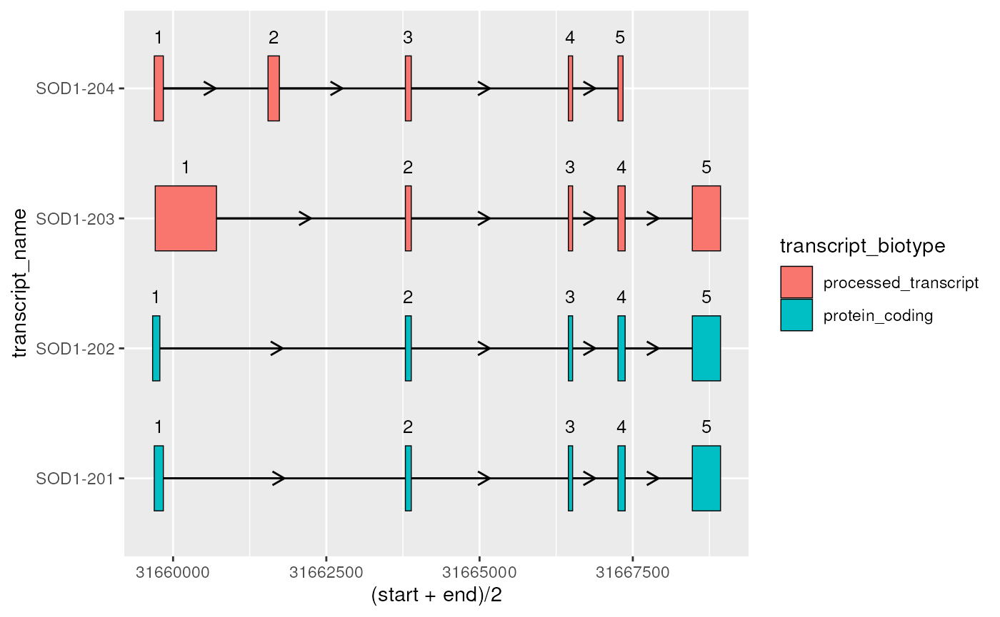
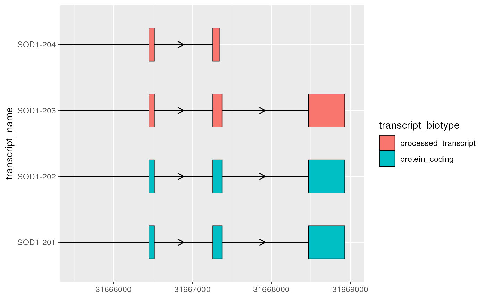
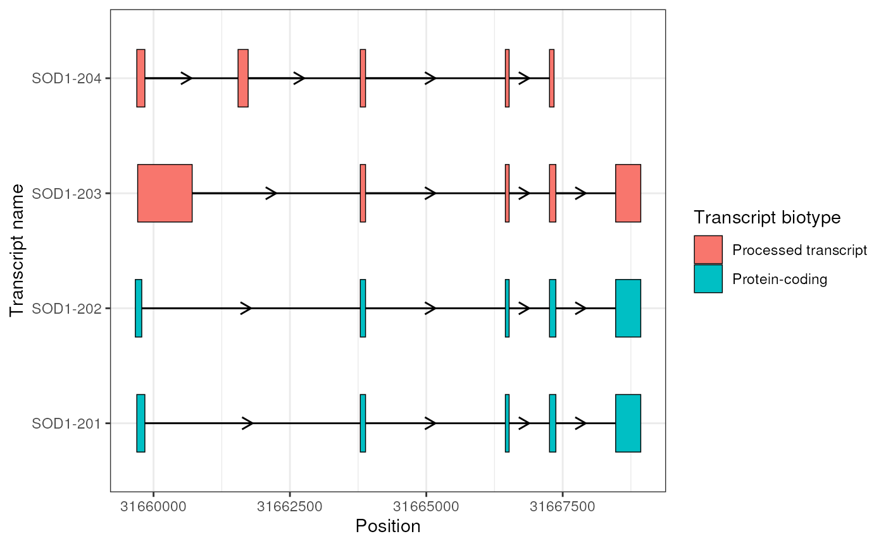

Getting started
David Zhang
UCLdyzhang32@gmail.com Source:
vignettes/ggtranscript.Rmd
ggtranscript.Rmd
library(magrittr)
library(dplyr)
#>
#> Attaching package: 'dplyr'
#> The following objects are masked from 'package:stats':
#>
#> filter, lag
#> The following objects are masked from 'package:base':
#>
#> intersect, setdiff, setequal, union
library(ggtranscript)
library(ggplot2)
library(rtracklayer)
#> Loading required package: GenomicRanges
#> Loading required package: stats4
#> Loading required package: BiocGenerics
#>
#> Attaching package: 'BiocGenerics'
#> The following objects are masked from 'package:dplyr':
#>
#> combine, intersect, setdiff, union
#> The following objects are masked from 'package:stats':
#>
#> IQR, mad, sd, var, xtabs
#> The following objects are masked from 'package:base':
#>
#> anyDuplicated, aperm, append, as.data.frame, basename, cbind,
#> colnames, dirname, do.call, duplicated, eval, evalq, Filter, Find,
#> get, grep, grepl, intersect, is.unsorted, lapply, Map, mapply,
#> match, mget, order, paste, pmax, pmax.int, pmin, pmin.int,
#> Position, rank, rbind, Reduce, rownames, sapply, setdiff, table,
#> tapply, union, unique, unsplit, which.max, which.min
#> Loading required package: S4Vectors
#>
#> Attaching package: 'S4Vectors'
#> The following objects are masked from 'package:dplyr':
#>
#> first, rename
#> The following object is masked from 'package:utils':
#>
#> findMatches
#> The following objects are masked from 'package:base':
#>
#> expand.grid, I, unname
#> Loading required package: IRanges
#>
#> Attaching package: 'IRanges'
#> The following objects are masked from 'package:dplyr':
#>
#> collapse, desc, slice
#> Loading required package: GenomeInfoDb
#>
#> Attaching package: 'GenomicRanges'
#> The following object is masked from 'package:magrittr':
#>
#> subtractggtranscript is designed to make it easy to visualize
transcript structure and annotation using ggplot2.
As the intended users are those who work with genetic and/or
transcriptomic data in R, this tutorial assumes a basic
understanding of transcript annotation and familiarity with
ggplot2.
Input data
Example data
In order to showcase the package’s functionality,
ggtranscript includes example transcript annotation for the
genes SOD1 and PKNOX1, as well as a set of unannotated
junctions associated with SOD1. These specific genes are
unimportant, chosen arbitrarily for illustration. However, it worth
noting that the input data for ggtranscript, as a
ggplot2 extension, is required be a data.frame
or tibble.
sod1_annotation %>% head()
#> # A tibble: 6 × 8
#> seqnames start end strand type gene_name transcript_name
#> <fct> <int> <int> <fct> <fct> <chr> <chr>
#> 1 21 31659666 31668931 + gene SOD1 NA
#> 2 21 31659666 31668931 + transcript SOD1 SOD1-202
#> 3 21 31659666 31659784 + exon SOD1 SOD1-202
#> 4 21 31659770 31659784 + CDS SOD1 SOD1-202
#> 5 21 31659770 31659772 + start_codon SOD1 SOD1-202
#> 6 21 31663790 31663886 + exon SOD1 SOD1-202
#> # ℹ 1 more variable: transcript_biotype <chr>
pknox1_annotation %>% head()
#> # A tibble: 6 × 8
#> seqnames start end strand type gene_name transcript_name
#> <fct> <int> <int> <fct> <fct> <chr> <chr>
#> 1 21 42974510 43033931 + gene PKNOX1 NA
#> 2 21 42974510 43033931 + transcript PKNOX1 PKNOX1-203
#> 3 21 42974510 42974664 + exon PKNOX1 PKNOX1-203
#> 4 21 43004326 43004432 + exon PKNOX1 PKNOX1-203
#> 5 21 43007491 43007618 + exon PKNOX1 PKNOX1-203
#> 6 21 43013068 43013238 + exon PKNOX1 PKNOX1-203
#> # ℹ 1 more variable: transcript_biotype <chr>
sod1_junctions
#> # A tibble: 5 × 5
#> seqnames start end strand mean_count
#> <fct> <int> <int> <fct> <dbl>
#> 1 chr21 31659787 31666448 + 0.463
#> 2 chr21 31659842 31660554 + 0.831
#> 3 chr21 31659842 31663794 + 0.316
#> 4 chr21 31659842 31667257 + 4.35
#> 5 chr21 31660351 31663789 + 0.324Importing data from a gtf
You may be asking, what if I have a gtf file or a
GRanges object? The below demonstrates how to wrangle a
gtf into the required format for ggtranscript
and extract the relevant annotation for a particular gene of
interest.
For the purposes of the vignette, here we download a gtf
(Ensembl version 105), then load the gtf into
R using rtracklayer::import().
# download ens 105 gtf into a temporary directory
gtf_path <- file.path(tempdir(), "Homo_sapiens.GRCh38.105.chr.gtf.gz")
download.file(
paste0(
"http://ftp.ensembl.org/pub/release-105/gtf/homo_sapiens/",
"Homo_sapiens.GRCh38.105.chr.gtf.gz"
),
destfile = gtf_path
)
gtf <- rtracklayer::import(gtf_path)
class(gtf)
#> [1] "GRanges"
#> attr(,"package")
#> [1] "GenomicRanges"To note, the loaded gtf is a GRanges class
object. The input data for ggtranscript, as a
ggplot2 extension, is required be a data.frame
or tibble. We
can convert a GRanges to a data.frame using
as.data.frame or a tibble via
dplyr::as_tibble(). Either is fine with respect to
ggtranscript, however we prefer tibbles over
data.frames for several reasons.
Now that the gtf is a tibble (or
data.frame object), we can dplyr::filter()
rows and dplyr::select() columns to keep the annotation
columns required for any specific gene of interest. Here, we illustrate
how you would obtain the annotation for the gene SOD1, ready
for plotting with ggtranscript.
# filter your gtf for the gene of interest, here "SOD1"
gene_of_interest <- "SOD1"
sod1_annotation_from_gtf <- gtf %>%
dplyr::filter(
!is.na(gene_name),
gene_name == gene_of_interest
)
# extract the required annotation columns
sod1_annotation_from_gtf <- sod1_annotation_from_gtf %>%
dplyr::select(
seqnames,
start,
end,
strand,
type,
gene_name,
transcript_name,
transcript_biotype
)
sod1_annotation_from_gtf %>% head()
#> # A tibble: 6 × 8
#> seqnames start end strand type gene_name transcript_name
#> <fct> <int> <int> <fct> <fct> <chr> <chr>
#> 1 21 31659666 31668931 + gene SOD1 NA
#> 2 21 31659666 31668931 + transcript SOD1 SOD1-202
#> 3 21 31659666 31659784 + exon SOD1 SOD1-202
#> 4 21 31659770 31659784 + CDS SOD1 SOD1-202
#> 5 21 31659770 31659772 + start_codon SOD1 SOD1-202
#> 6 21 31663790 31663886 + exon SOD1 SOD1-202
#> # ℹ 1 more variable: transcript_biotype <chr>Importing data from a bed file
If users would like to plot ranges from a bed file using
ggtranscript, they can first import the bed
file into R using rtracklayer::import.bed().
This method will create a UCSCData object.
# for the example, we'll use the test bed file provided by rtracklayer
test_bed <- system.file("tests/test.bed", package = "rtracklayer")
bed <- rtracklayer::import.bed(test_bed)
class(bed)
#> [1] "UCSCData"
#> attr(,"package")
#> [1] "rtracklayer"A UCSCData object can be coerced into a
tibble, a data structure which can be plotted using
ggplot2/ggtranscript, using
dplyr::as_tibble().
bed <- bed %>% dplyr::as_tibble()
class(bed)
#> [1] "tbl_df" "tbl" "data.frame"
bed %>% head()
#> # A tibble: 5 × 12
#> seqnames start end width strand name score itemRgb thick.start thick.end
#> <fct> <int> <int> <int> <fct> <chr> <dbl> <chr> <int> <int>
#> 1 chr7 1.27e8 1.27e8 1167 + Pos1 0 #FF0000 127471197 127472363
#> 2 chr7 1.27e8 1.27e8 1167 + Pos2 2 #FF0000 127472364 127473530
#> 3 chr7 1.27e8 1.27e8 1167 - Neg1 0 #FF0000 127473531 127474697
#> 4 chr9 1.27e8 1.27e8 1167 + Pos3 5 #FF0000 127474698 127475864
#> 5 chr9 1.27e8 1.27e8 1167 - Neg2 5 #0000FF 127475865 127477031
#> # ℹ 2 more variables: thick.width <int>, blocks <list>Basic usage
Required aesthetics
ggtranscript introduces 5 new geoms designed to simplify
the visualization of transcript structure and annotation;
geom_range(), geom_half_range(),
geom_intron(), geom_junction() and
geom_junction_label_repel(). The required aesthetics
(aes()) for these geoms are designed to match the data
formats which are widely used in genetic and transcriptomic
analyses:
| Required aes() | Type | Description | Required by |
|---|---|---|---|
| xstart | integer | Start position in base pairs | All geoms |
| xend | integer | End position in base pairs | All geoms |
| y | charactor or factor | The group used for the y axis, most often a transcript id or name | All geoms |
| label | integer or charactor | Variable used to label junction curves | Only geom_junction_label_repel() |
Plotting exons and introns
In the simplest case, the core components of transcript structure are
exons and introns, which can be plotted using geom_range()
and geom_intron(). In order to facilitate this,
ggtranscript also provides to_intron(), which
converts exon co-ordinates into introns. Therefore, you can plot
transcript structures with only exons as input and just a few lines of
code.
📌: As
ggtranscriptgeoms share required aesthetics, it is recommended to set these viaggplot(), rather than in the individualgeom_*()calls to avoid code duplication.
# to illustrate the package's functionality
# ggtranscript includes example transcript annotation
sod1_annotation %>% head()
#> # A tibble: 6 × 8
#> seqnames start end strand type gene_name transcript_name
#> <fct> <int> <int> <fct> <fct> <chr> <chr>
#> 1 21 31659666 31668931 + gene SOD1 NA
#> 2 21 31659666 31668931 + transcript SOD1 SOD1-202
#> 3 21 31659666 31659784 + exon SOD1 SOD1-202
#> 4 21 31659770 31659784 + CDS SOD1 SOD1-202
#> 5 21 31659770 31659772 + start_codon SOD1 SOD1-202
#> 6 21 31663790 31663886 + exon SOD1 SOD1-202
#> # ℹ 1 more variable: transcript_biotype <chr>
# extract exons
sod1_exons <- sod1_annotation %>% dplyr::filter(type == "exon")
sod1_exons %>%
ggplot(aes(
xstart = start,
xend = end,
y = transcript_name
)) +
geom_range(
aes(fill = transcript_biotype)
) +
geom_intron(
data = to_intron(sod1_exons, "transcript_name"),
aes(strand = strand)
)Differentiating UTRs from the coding sequence
As suggested by it’s name, geom_range() is designed to
visualize range-based transcript annotation. This includes but is not
limited to exons. For instance, for protein coding transcripts it can be
useful to visually distinguish the coding sequence (CDS) of a transcript
from it’s UTRs. This can be achieved by adjusting the height and fill of
geom_range() and overlaying the CDS on top of the exons
(including UTRs).
# filter for only exons from protein coding transcripts
sod1_exons_prot_cod <- sod1_exons %>%
dplyr::filter(transcript_biotype == "protein_coding")
# obtain cds
sod1_cds <- sod1_annotation %>% dplyr::filter(type == "CDS")
sod1_exons_prot_cod %>%
ggplot(aes(
xstart = start,
xend = end,
y = transcript_name
)) +
geom_range(
fill = "white",
height = 0.25
) +
geom_range(
data = sod1_cds
) +
geom_intron(
data = to_intron(sod1_exons_prot_cod, "transcript_name"),
aes(strand = strand),
arrow.min.intron.length = 500,
)
Plotting junctions
geom_junction() plots curved lines that are intended to
represent junction reads. Junctions are reads obtained through
RNA-sequencing (RNA-seq) data that map with gapped alignment to the
genome. Often, this gap is indicative of a splicing event, but can also
originate from other genomic events such as indels.
It can be useful to visually overlay junctions on top of an existing transcript structure. For example, this can help to understand which existing transcripts are expressed in the RNA-seq sample or inform the location or interpretation of the novel splice sites.
geom_junction_label_repel() adds labels to junction
curves. This can useful for labeling junctions with a measure of their
expression or support such as read counts or percent-spliced-in.
Alternatively, you may choose to visually map this measure to the
thickness of the junction curves by adjusting the the size
aes(). Or, as shown below, both of these options can be
combined.
# extract exons and cds for the MANE-select transcript
sod1_201_exons <- sod1_exons %>% dplyr::filter(transcript_name == "SOD1-201")
sod1_201_cds <- sod1_cds %>% dplyr::filter(transcript_name == "SOD1-201")
# add transcript name column to junctions for plotting
sod1_junctions <- sod1_junctions %>% dplyr::mutate(transcript_name = "SOD1-201")
sod1_201_exons %>%
ggplot(aes(
xstart = start,
xend = end,
y = transcript_name
)) +
geom_range(
fill = "white",
height = 0.25
) +
geom_range(
data = sod1_201_cds
) +
geom_intron(
data = to_intron(sod1_201_exons, "transcript_name")
) +
geom_junction(
data = sod1_junctions,
aes(size = mean_count),
junction.y.max = 0.5
) +
geom_junction_label_repel(
data = sod1_junctions,
aes(label = round(mean_count, 2)),
junction.y.max = 0.5
) +
scale_size_continuous(range = c(0.1, 1))
#> Warning: Using `size` aesthetic for lines was deprecated in ggplot2 3.4.0.
#> ℹ Please use `linewidth` instead.
#> This warning is displayed once every 8 hours.
#> Call `lifecycle::last_lifecycle_warnings()` to see where this warning was
#> generated.
Visualizing transcript structure differences
Context
One of the primary reasons for visualizing transcript structures is to better observe the differences between them. Often this can be achieved by simply plotting the exons and introns as shown in basic usage. However, for longer, complex transcripts this may not be as straight forward.
For example, the transcripts of PKNOX1 have relatively long introns, which makes the comparison between transcript structures (especially small differences in exons) more difficult.
📌: For relatively short introns, strand arrows may overlap exons. In such cases, the
arrow.min.intron.lengthparameter ofgeom_intron()can be used to set the minimum intron length for a strand arrow to be plotted.
# extract exons
pknox1_exons <- pknox1_annotation %>% dplyr::filter(type == "exon")
pknox1_exons %>%
ggplot(aes(
xstart = start,
xend = end,
y = transcript_name
)) +
geom_range(
aes(fill = transcript_biotype)
) +
geom_intron(
data = to_intron(pknox1_exons, "transcript_name"),
aes(strand = strand),
arrow.min.intron.length = 3500
)
Improving transcript structure visualisation using
shorten_gaps()
ggtranscript provides the helper function
shorten_gaps(), which reduces the size of the gaps (regions
that do not overlap an exon). shorten_gaps() then rescales
the exon and intron co-ordinates, preserving the original exon
alignment. This allows you to hone in the differences of interest, such
as the exonic structure.
📌: The rescaled co-ordinates returned by
shorten_gaps()will not match the original genomic positions. Therefore, it is recommended thatshorten_gaps()is used for visualizations purposes only.
# extract exons
pknox1_exons <- pknox1_annotation %>% dplyr::filter(type == "exon")
pknox1_rescaled <- shorten_gaps(
exons = pknox1_exons,
introns = to_intron(pknox1_exons, "transcript_name"),
group_var = "transcript_name"
)
# shorten_gaps() returns exons and introns all in one data.frame()
# let's split these for plotting
pknox1_rescaled_exons <- pknox1_rescaled %>% dplyr::filter(type == "exon")
pknox1_rescaled_introns <- pknox1_rescaled %>% dplyr::filter(type == "intron")
pknox1_rescaled_exons %>%
ggplot(aes(
xstart = start,
xend = end,
y = transcript_name
)) +
geom_range(
aes(fill = transcript_biotype)
) +
geom_intron(
data = pknox1_rescaled_introns,
aes(strand = strand),
arrow.min.intron.length = 300
)
Comparing between two transcripts using
geom_half_range()
If you are interested in the differences between two transcripts, you
can use geom_half_range() whilst adjusting
range.orientation to plot the exons from each on the
opposite sides of the transcript structure. This can reveal small
differences in exon structure, such as those observed here at the 5’
ends of PKNOX1-201 and PKNOX1-203.
# extract the two transcripts to be compared
pknox1_rescaled_201_exons <- pknox1_rescaled_exons %>%
dplyr::filter(transcript_name == "PKNOX1-201")
pknox1_rescaled_203_exons <- pknox1_rescaled_exons %>%
dplyr::filter(transcript_name == "PKNOX1-203")
pknox1_rescaled_201_exons %>%
ggplot(aes(
xstart = start,
xend = end,
y = "PKNOX1-201/203"
)) +
geom_half_range() +
geom_intron(
data = to_intron(pknox1_rescaled_201_exons, "transcript_name"),
arrow.min.intron.length = 300
) +
geom_half_range(
data = pknox1_rescaled_203_exons,
range.orientation = "top",
fill = "purple"
) +
geom_intron(
data = to_intron(pknox1_rescaled_203_exons, "transcript_name"),
arrow.min.intron.length = 300
)
Comparing many transcripts to a single reference transcript using
to_diff()
Sometimes, it can be useful to visualize the differences of several transcripts with respect to one transcript. For example, you may be interested in how other transcripts differ in structure to the MANE-select transcript. This exploration can reveal whether certain important regions are missing or novel regions are added, hinting at differences in transcript function.
to_diff() is a helper function designed for this
situation. Here, we apply this to PKNOX1, finding the
differences between all other transcripts and the MANE-select transcript
(PKNOX1-201).
📌: Although below, we apply
to_diff()to the rescaled exons and intron (outputted byshorten_gaps()),to_diff()can also be applied to the original, unscaled transcripts with the same effect.
mane <- pknox1_rescaled_201_exons
not_mane <- pknox1_rescaled_exons %>%
dplyr::filter(transcript_name != "PKNOX1-201")
pknox1_rescaled_diffs <- to_diff(
exons = not_mane,
ref_exons = mane,
group_var = "transcript_name"
)
pknox1_rescaled_exons %>%
ggplot(aes(
xstart = start,
xend = end,
y = transcript_name
)) +
geom_range() +
geom_intron(
data = pknox1_rescaled_introns,
arrow.min.intron.length = 300
) +
geom_range(
data = pknox1_rescaled_diffs,
aes(fill = diff_type),
alpha = 0.2
)Integrating existing ggplot2 functionality
As a ggplot2 extension, ggtranscript
inherits ggplot2’s familiarity and flexibility, enabling
users to intuitively adjust aesthetics, parameters, scales etc as well
as complement ggtranscript geoms with existing
ggplot2 geoms to create informative, publication-ready
plots.
Below is a list outlining some examples of complementing
ggtranscript with existing ggplot2
functionality that we have found useful:
- Adding exon annotation such as exon
number/order using
add_exon_number()andgeom_text()
base_sod1_plot <- sod1_exons %>%
ggplot(aes(
xstart = start,
xend = end,
y = transcript_name
)) +
geom_range(
aes(fill = transcript_biotype)
) +
geom_intron(
data = to_intron(sod1_exons, "transcript_name"),
aes(strand = strand)
)
base_sod1_plot +
geom_text(
data = add_exon_number(sod1_exons, "transcript_name"),
aes(
x = (start + end) / 2, # plot label at midpoint of exon
label = exon_number
),
size = 3.5,
nudge_y = 0.4
)
- Zooming in on areas of interest using
coord_cartesian()orggforce::facet_zoom()
base_sod1_plot +
coord_cartesian(xlim = c(31665500, 31669000))
- Plotting mutations using
geom_vline()
example_mutation <- dplyr::tibble(
transcript_name = "SOD1-204",
position = 31661600
)
# xstart and xend are set here to override the default aes()
base_sod1_plot +
geom_vline(
data = example_mutation,
aes(
xintercept = position,
xstart = NULL,
xend = NULL
),
linetype = 2,
colour = "red"
)
- Beautifying plots using themes and scales
base_sod1_plot +
theme_bw() +
scale_x_continuous(name = "Position") +
scale_y_discrete(name = "Transcript name") +
scale_fill_discrete(
name = "Transcript biotype",
labels = c("Processed transcript", "Protein-coding")
)
Session info
Show/hide
#> ─ Session info ───────────────────────────────────────────────────────────────────────────────────────────────────────
#> setting value
#> version R version 4.4.1 (2024-06-14)
#> os Ubuntu 22.04.4 LTS
#> system x86_64, linux-gnu
#> ui X11
#> language en
#> collate en_US.UTF-8
#> ctype en_US.UTF-8
#> tz UTC
#> date 2024-08-24
#> pandoc 3.2 @ /usr/bin/ (via rmarkdown)
#>
#> ─ Packages ───────────────────────────────────────────────────────────────────────────────────────────────────────────
#> package * version date (UTC) lib source
#> abind 1.4-5 2016-07-21 [1] RSPM (R 4.4.0)
#> Biobase 2.64.0 2024-04-30 [1] Bioconductor 3.19 (R 4.4.1)
#> BiocGenerics * 0.50.0 2024-04-30 [1] Bioconductor 3.19 (R 4.4.1)
#> BiocIO 1.14.0 2024-04-30 [1] Bioconductor 3.19 (R 4.4.1)
#> BiocManager 1.30.24 2024-08-20 [1] RSPM (R 4.4.0)
#> BiocParallel 1.38.0 2024-04-30 [1] Bioconductor 3.19 (R 4.4.1)
#> BiocStyle * 2.32.1 2024-06-16 [1] Bioconductor 3.19 (R 4.4.1)
#> Biostrings 2.72.1 2024-06-02 [1] Bioconductor 3.19 (R 4.4.1)
#> bitops 1.0-8 2024-07-29 [1] RSPM (R 4.4.0)
#> bookdown 0.40 2024-07-02 [1] RSPM (R 4.4.0)
#> bslib 0.8.0 2024-07-29 [2] RSPM (R 4.4.0)
#> cachem 1.1.0 2024-05-16 [2] RSPM (R 4.4.0)
#> cli 3.6.3 2024-06-21 [2] RSPM (R 4.4.0)
#> codetools 0.2-20 2024-03-31 [3] CRAN (R 4.4.1)
#> colorspace 2.1-1 2024-07-26 [1] RSPM (R 4.4.0)
#> crayon 1.5.3 2024-06-20 [2] RSPM (R 4.4.0)
#> curl 5.2.1 2024-03-01 [2] RSPM (R 4.4.0)
#> DelayedArray 0.30.1 2024-05-07 [1] Bioconductor 3.19 (R 4.4.1)
#> desc 1.4.3 2023-12-10 [2] RSPM (R 4.4.0)
#> digest 0.6.37 2024-08-19 [2] RSPM (R 4.4.0)
#> dplyr * 1.1.4 2023-11-17 [1] RSPM (R 4.4.0)
#> evaluate 0.24.0 2024-06-10 [2] RSPM (R 4.4.0)
#> fansi 1.0.6 2023-12-08 [2] RSPM (R 4.4.0)
#> farver 2.1.2 2024-05-13 [1] RSPM (R 4.4.0)
#> fastmap 1.2.0 2024-05-15 [2] RSPM (R 4.4.0)
#> fs 1.6.4 2024-04-25 [2] RSPM (R 4.4.0)
#> generics 0.1.3 2022-07-05 [1] RSPM (R 4.4.0)
#> GenomeInfoDb * 1.40.1 2024-05-24 [1] Bioconductor 3.19 (R 4.4.1)
#> GenomeInfoDbData 1.2.12 2024-06-25 [1] Bioconductor
#> GenomicAlignments 1.40.0 2024-04-30 [1] Bioconductor 3.19 (R 4.4.1)
#> GenomicRanges * 1.56.1 2024-06-12 [1] Bioconductor 3.19 (R 4.4.1)
#> ggplot2 * 3.5.1 2024-04-23 [1] RSPM (R 4.4.0)
#> ggrepel 0.9.5 2024-01-10 [1] RSPM (R 4.4.0)
#> ggtranscript * 1.0.0 2024-08-24 [1] local
#> glue 1.7.0 2024-01-09 [2] RSPM (R 4.4.0)
#> gtable 0.3.5 2024-04-22 [1] RSPM (R 4.4.0)
#> highr 0.11 2024-05-26 [2] RSPM (R 4.4.0)
#> htmltools 0.5.8.1 2024-04-04 [2] RSPM (R 4.4.0)
#> htmlwidgets 1.6.4 2023-12-06 [2] RSPM (R 4.4.0)
#> httr 1.4.7 2023-08-15 [2] RSPM (R 4.4.0)
#> IRanges * 2.38.1 2024-07-03 [1] Bioconductor 3.19 (R 4.4.1)
#> jquerylib 0.1.4 2021-04-26 [2] RSPM (R 4.4.0)
#> jsonlite 1.8.8 2023-12-04 [2] RSPM (R 4.4.0)
#> knitr 1.48 2024-07-07 [2] RSPM (R 4.4.0)
#> labeling 0.4.3 2023-08-29 [1] RSPM (R 4.4.0)
#> lattice 0.22-6 2024-03-20 [3] CRAN (R 4.4.1)
#> lifecycle 1.0.4 2023-11-07 [2] RSPM (R 4.4.0)
#> magrittr * 2.0.3 2022-03-30 [2] RSPM (R 4.4.0)
#> Matrix 1.7-0 2024-04-26 [3] CRAN (R 4.4.1)
#> MatrixGenerics 1.16.0 2024-04-30 [1] Bioconductor 3.19 (R 4.4.1)
#> matrixStats 1.3.0 2024-04-11 [1] RSPM (R 4.4.0)
#> munsell 0.5.1 2024-04-01 [1] RSPM (R 4.4.0)
#> pillar 1.9.0 2023-03-22 [2] RSPM (R 4.4.0)
#> pkgconfig 2.0.3 2019-09-22 [2] RSPM (R 4.4.0)
#> pkgdown 2.1.0 2024-07-06 [2] RSPM (R 4.4.0)
#> R6 2.5.1 2021-08-19 [2] RSPM (R 4.4.0)
#> ragg 1.3.2 2024-05-15 [2] RSPM (R 4.4.0)
#> Rcpp 1.0.13 2024-07-17 [2] RSPM (R 4.4.0)
#> RCurl 1.98-1.16 2024-07-11 [1] RSPM (R 4.4.0)
#> restfulr 0.0.15 2022-06-16 [1] RSPM (R 4.4.1)
#> rjson 0.2.22 2024-08-20 [1] RSPM (R 4.4.0)
#> rlang 1.1.4 2024-06-04 [2] RSPM (R 4.4.0)
#> rmarkdown 2.28 2024-08-17 [2] RSPM (R 4.4.0)
#> Rsamtools 2.20.0 2024-04-30 [1] Bioconductor 3.19 (R 4.4.1)
#> rtracklayer * 1.64.0 2024-04-30 [1] Bioconductor 3.19 (R 4.4.1)
#> S4Arrays 1.4.1 2024-05-20 [1] Bioconductor 3.19 (R 4.4.1)
#> S4Vectors * 0.42.1 2024-07-03 [1] Bioconductor 3.19 (R 4.4.1)
#> sass 0.4.9 2024-03-15 [2] RSPM (R 4.4.0)
#> scales 1.3.0 2023-11-28 [1] RSPM (R 4.4.0)
#> sessioninfo * 1.2.2 2021-12-06 [2] RSPM (R 4.4.0)
#> SparseArray 1.4.8 2024-05-24 [1] Bioconductor 3.19 (R 4.4.1)
#> SummarizedExperiment 1.34.0 2024-05-01 [1] Bioconductor 3.19 (R 4.4.1)
#> systemfonts 1.1.0 2024-05-15 [2] RSPM (R 4.4.0)
#> textshaping 0.4.0 2024-05-24 [2] RSPM (R 4.4.0)
#> tibble 3.2.1 2023-03-20 [2] RSPM (R 4.4.0)
#> tidyselect 1.2.1 2024-03-11 [1] RSPM (R 4.4.0)
#> UCSC.utils 1.0.0 2024-04-30 [1] Bioconductor 3.19 (R 4.4.1)
#> utf8 1.2.4 2023-10-22 [2] RSPM (R 4.4.0)
#> vctrs 0.6.5 2023-12-01 [2] RSPM (R 4.4.0)
#> withr 3.0.1 2024-07-31 [2] RSPM (R 4.4.0)
#> xfun 0.47 2024-08-17 [2] RSPM (R 4.4.0)
#> XML 3.99-0.17 2024-06-25 [1] RSPM (R 4.4.0)
#> XVector 0.44.0 2024-04-30 [1] Bioconductor 3.19 (R 4.4.1)
#> yaml 2.3.10 2024-07-26 [2] RSPM (R 4.4.0)
#> zlibbioc 1.50.0 2024-04-30 [1] Bioconductor 3.19 (R 4.4.1)
#>
#> [1] /__w/_temp/Library
#> [2] /usr/local/lib/R/site-library
#> [3] /usr/local/lib/R/library
#>
#> ──────────────────────────────────────────────────────────────────────────────────────────────────────────────────────